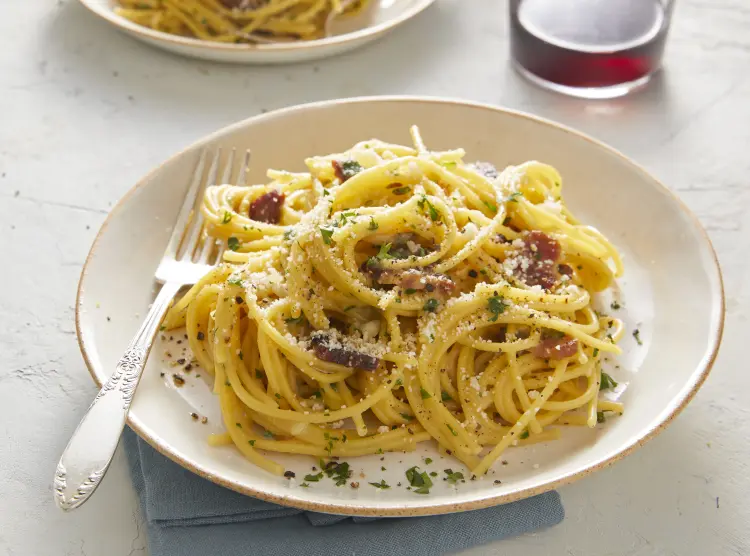

Spaghetti Carbonara

Spaghetti Carbonara is a rich, creamy Italian dish made with eggs, cheese,
pancetta or bacon, and black pepper. The hot pasta combines with the egg
and cheese mixture to create a smooth sauce, while the pancetta adds a
savory crunch and the pepper adds a slight spice.
This dish is quick and easy to make. The key is to mix the hot pasta with
the egg and cheese mixture right after draining to achieve the perfect
creamy texture. Spaghetti Carbonara showcases how a few simple ingredients
can create a delicious meal.
Ingredients
- 200g spaghetti
- 100g pancetta or bacon, diced
- 2 large eggs
- 50g Pecorino Romano cheese, grated
- 50g Parmesan cheese, grated
- Salt and pepper to taste
- A splash of olive oil
Steps
-
Boil a pot of salted water. Cook the spaghetti according to package
instructions until al dente.
- In a skillet, heat a splash of olive oil over medium heat.
- Add the diced pancetta or bacon. Cook until crispy.
-
In a bowl, beat the eggs and mix in the grated cheeses. Add a good
amount of black pepper.
- Drain the spaghetti, saving a cup of pasta water.
-
Quickly toss the hot spaghetti with the pancetta/bacon in the skillet.
-
Remove from heat. Pour the egg and cheese mixture over the pasta,
tossing to create a creamy sauce. Add reserved pasta water if needed to
adjust consistency.
- Serve immediately with extra cheese and pepper on top.
- Enjoy your easy spaghetti carbonara!